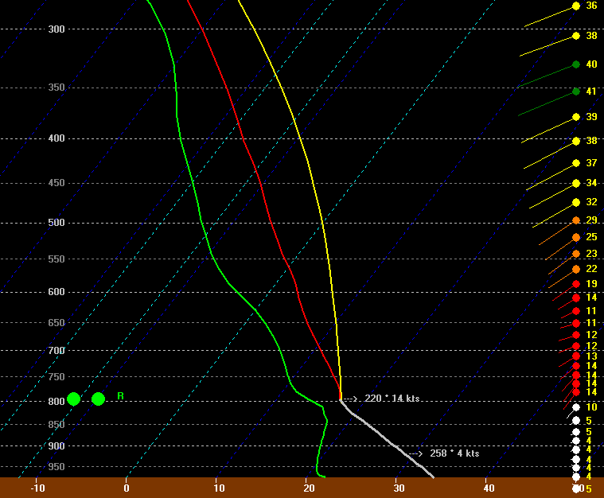
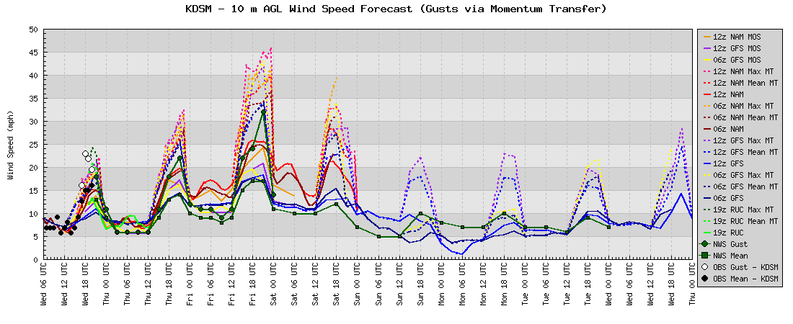

|
What is Momentum Transfer? Description given in the Bufkit Documentation: 4.4.1.15 Momentium Transfer. This technique, developed at WFO Tauton and WFO Burlington, indicates the potential for upperlevel winds to mix down to the surface. The display is computed as follows: Starting at the surface, go up the temperature profile until the temperature decrease is no longer close to the dry adiabatic lapse rate. Bufkit highlights this portion of the temperature profile in light red and displays the wind speed and direction at that top level. Bufkit then computes the vector mean wind within that layer. (Source) Shown below is an image of what this display looks like in a more recent version of the Bufkit software. The mixed layer is highlighted with the gray line (no longer light red). The mean mixed-layer wind is displayed below (258° 4kts), and the wind at the top of the mixed layer is displayed above (220° 14 kts).
 So, why is this important? A study by Cook and Williams in 2007 shows that on days with a well-mixed boundary layer, signficant errors in forecasted surface wind speed can result. One solution is to account for the downward flux of momentum into the boundary layer that occurs while the BL-growth process takes place. Cook and Williams show that the calculated mean mixed layer wind is often the most accurate for forecasting wind gusts, especially using the RUC or GFS. It is important to note, however, that the operational versions of all models have undergone many changes since the time of this study, especially in their treatment of boundary layer processes. Nevertheless, this tool can be especially valueable for forecasting wind speed, thus why I have chose to include it as part of the Meteograms. The default display can be quite overwhelming with many lines. On the right side of the page, you'll find 3 configuration options that allow you display a combination of the forecasted sustained winds (Mean), and/or the calculated mean mixed layer wind speed using momentum transfer (Mean MT), and/or the wind speed at the top of the mixed layer using momentum transfer (Max MT).
 In general, the forecasted sustained winds are shown with solid lines, and the momentum transfer methods use a dashed line. You can notice from this plot how the mometum transfer methods predict much high wind speeds as opposed to the raw 10-meter wind output from the model. |